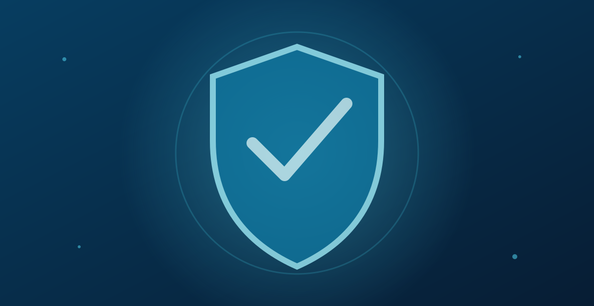
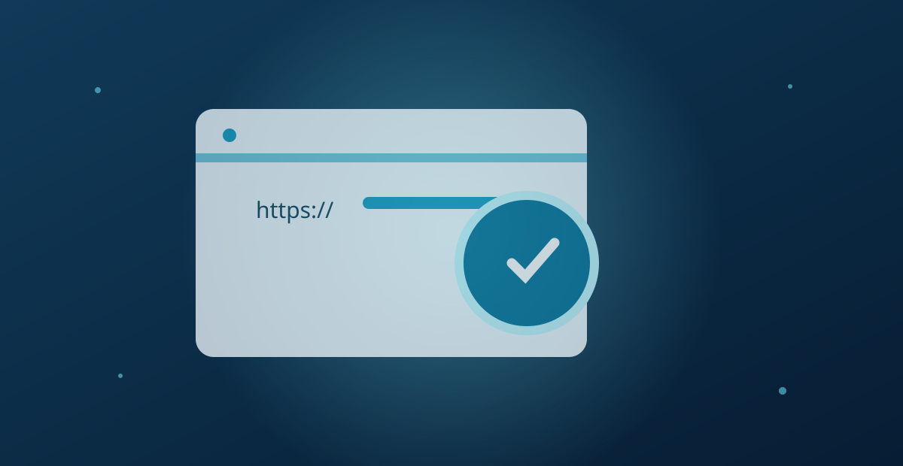
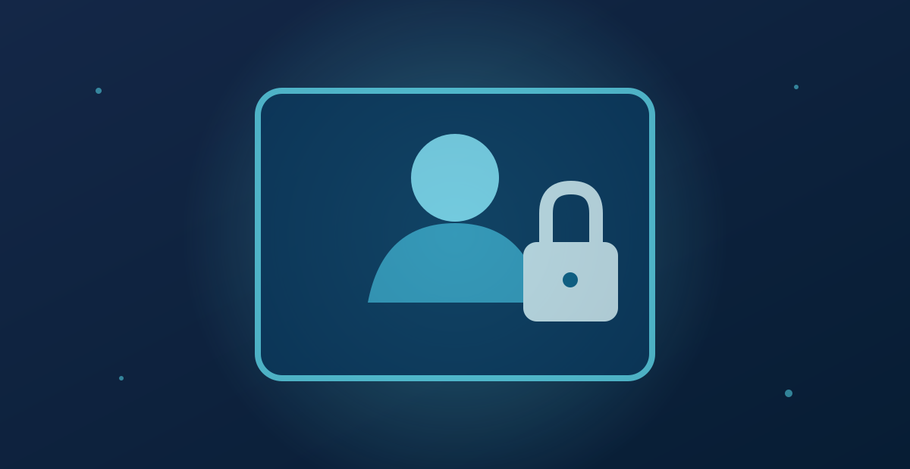

An toàn thông tin và bảo vệ quyền riêng tư trực tuyến
Cập nhật:
Trong quá trình sử dụng Internet, bạn có thể nhận được tin nhắn yêu cầu đăng nhập lại tài khoản, cảnh báo tài khoản sắp bị khóa hoặc thông báo đề nghị cấp quyền truy cập danh bạ. Những tình huống này có thể xuất hiện khi bạn làm việc, học tập hoặc sử dụng các dịch vụ trực tuyến hằng ngày.

Không phải liên kết lạ nào cũng nguy hiểm, nhưng những yêu cầu chưa được xác minh cần được xem xét cẩn thận. Việc nhập mật khẩu vào trang giả mạo hoặc cấp quyền không phù hợp có thể khiến thông tin cá nhân gặp rủi ro. Biết cách kiểm tra đường dẫn, xác minh nguồn gửi và quản lý quyền truy cập sẽ giúp bạn chủ động hơn khi sử dụng Internet.
An toàn thông tin là gì và vì sao quan trọng?
An toàn thông tin là việc bảo vệ dữ liệu khỏi sự truy cập, tiết lộ hoặc sửa đổi trái phép, đồng thời đảm bảo dữ liệu vẫn có thể sử dụng khi cần thiết. Trong thực tế, điều này liên quan đến mật khẩu, tài khoản trực tuyến và các tệp cá nhân. Nếu dữ liệu bị lộ hoặc thay đổi ngoài ý muốn, bạn có thể mất quyền kiểm soát tài khoản hoặc gặp khó khăn khi khôi phục thông tin.
Bạn có thể bắt đầu từ những việc đơn giản: sử dụng mật khẩu riêng cho từng tài khoản, cập nhật thiết bị và bật xác thực hai bước khi dịch vụ hỗ trợ. Kiểm tra lịch sử đăng nhập cũng giúp phát hiện hoạt động bất thường. Những biện pháp này không loại bỏ mọi rủi ro, nhưng giúp bạn bảo vệ tài khoản chủ động hơn.
Những rủi ro thường gặp khi sử dụng Internet
Nhiều rủi ro trực tuyến bắt đầu từ những thao tác quen thuộc như nhấp vào liên kết trong tin nhắn, tải tệp từ nguồn không rõ ràng hoặc làm theo hướng dẫn của người tự nhận là nhân viên hỗ trợ. Đặc biệt, những thông báo thúc giục người nhận hành động ngay cần được xem xét cẩn thận nếu chúng yêu cầu cung cấp thông tin cá nhân.
Các nguy cơ thường gặp gồm trang web giả mạo, tin nhắn lừa đảo, yêu cầu cung cấp mã xác minh, phần mềm không rõ nguồn gốc và ứng dụng xin quyền truy cập không phù hợp. Tùy trường hợp, những rủi ro này có thể dẫn đến lộ thông tin đăng nhập, mất quyền kiểm soát tài khoản hoặc khiến dữ liệu cá nhân bị sử dụng sai mục đích.
Không phải lúc nào những dấu hiệu đáng ngờ cũng dễ nhận ra. Một trang web hoặc tin nhắn có thể được trình bày giống với nguồn quen thuộc, từ logo đến màu sắc và cách diễn đạt. Vì vậy, hãy chú ý đến người gửi, địa chỉ liên kết và loại thông tin được yêu cầu. Nếu nội dung yêu cầu cung cấp mật khẩu, mã xác minh hoặc xử lý vấn đề ngay lập tức, hãy xác minh qua kênh chính thức trước khi làm theo.
Cách bảo vệ thông tin cá nhân trên mạng
Bạn không nhất thiết phải sử dụng những công cụ phức tạp để bảo vệ dữ liệu cá nhân. Điều quan trọng là quản lý tài khoản cẩn thận, hạn chế chia sẻ thông tin không cần thiết và xem xét kỹ những yêu cầu bất ngờ.
Sử dụng mật khẩu và phương thức xác thực phù hợp
Hãy sử dụng mật khẩu riêng cho từng tài khoản và tránh những mật khẩu dễ đoán. Nếu dịch vụ hỗ trợ, bạn có thể bật xác thực hai bước hoặc sử dụng khóa truy cập (passkey) để tăng cường bảo vệ tài khoản. Những phương thức này giúp giảm nguy cơ truy cập trái phép, nhưng không thể loại bỏ hoàn toàn mọi rủi ro.
Nếu nghi ngờ đã nhập mật khẩu vào một trang giả mạo, hãy truy cập dịch vụ qua ứng dụng hoặc địa chỉ chính thức để đổi mật khẩu và kiểm tra hoạt động đăng nhập. Nếu đã sử dụng mật khẩu đó cho những tài khoản khác, bạn cũng nên thay đổi mật khẩu tại các dịch vụ liên quan.
Cẩn trọng khi chia sẻ dữ liệu cá nhân
Họ tên, số điện thoại, địa chỉ email, hình ảnh giấy tờ và thông tin tài khoản đều cần được chia sẻ có cân nhắc. Trước khi cung cấp, hãy xem xét bên nhận có thực sự cần dữ liệu đó hay không và mục đích sử dụng có rõ ràng không.
Mật khẩu và mã xác minh dùng một lần không nên được chia sẻ cho người khác, kể cả khi họ tự nhận là nhân viên hỗ trợ. Nếu nhận được yêu cầu bất ngờ, hãy kiểm tra nguồn gửi và lý do yêu cầu trước khi quyết định. Đừng cung cấp thông tin chỉ vì người gửi tạo cảm giác khẩn cấp.

Để nhận biết các dấu hiệu đáng ngờ trong thư điện tử, bạn có thể tham khảo hướng dẫn của Google về cách nhận diện và báo cáo tin nhắn lừa đảo.
Cách nhận biết website và liên kết đáng ngờ
Kiểm tra địa chỉ trước khi đăng nhập
Hãy kiểm tra kỹ tên miền, đặc biệt là những ký tự bị thay thế, từ ngữ được thêm vào hoặc cách viết gần giống địa chỉ chính thức. Tên hiển thị của liên kết có thể gây nhầm lẫn, vì vậy hãy kiểm tra địa chỉ đích trước khi mở nếu trình duyệt hoặc thiết bị cho phép.
Khi nhận được đường dẫn qua tin nhắn, thư điện tử hoặc mạng xã hội, bạn nên tự mở ứng dụng hoặc nhập địa chỉ dịch vụ đã biết thay vì đăng nhập ngay từ liên kết đó. Nếu thông báo yêu cầu xác minh gấp hoặc đe dọa khóa tài khoản, hãy kiểm tra thông tin qua kênh chính thức trước khi thực hiện.
HTTPS giúp mã hóa kết nối giữa trình duyệt và trang web, nhưng không đảm bảo chủ sở hữu trang web đáng tin cậy. Website giả mạo vẫn có thể sử dụng HTTPS. Vì vậy, hãy xem xét tên miền và nguồn gửi thay vì chỉ dựa vào biểu tượng bảo mật trên trình duyệt.
Bạn có thể tìm hiểu thêm về các thủ đoạn giả mạo và thao túng người dùng trong hướng dẫn của Google về các trang web lừa đảo và thủ đoạn thao túng người dùng.
Tình huống thường gặp: Tin nhắn yêu cầu xác minh tài khoản
Khi nhận được tin nhắn yêu cầu xác minh tài khoản, đừng vội đăng nhập từ đường dẫn đi kèm. Hãy tự mở ứng dụng chính thức hoặc nhập địa chỉ dịch vụ vào trình duyệt, sau đó kiểm tra xem tài khoản có thông báo tương ứng hay không. Nếu không tìm thấy thông tin xác nhận, hãy liên hệ kênh hỗ trợ chính thức trước khi tiếp tục.
Nếu đã nhập mật khẩu vào trang đáng ngờ, hãy đổi mật khẩu qua kênh chính thức và kiểm tra hoạt động đăng nhập. Trường hợp sử dụng cùng mật khẩu cho tài khoản khác, bạn cũng nên thay đổi những mật khẩu đó. Khi trình duyệt cảnh báo trang web không an toàn, đừng bỏ qua cảnh báo chỉ để tiếp tục truy cập. Bạn có thể tham khảo hướng dẫn về cảnh báo trang web không an toàn trên Chrome để hiểu rõ hơn.
Quản lý quyền riêng tư và quyền truy cập ứng dụng
Kiểm tra quyền trước và sau khi cài đặt
Ứng dụng gọi điện có thể cần quyền sử dụng micrô, trong khi ứng dụng bản đồ có thể cần quyền truy cập vị trí để chỉ đường. Tuy nhiên, nếu một ứng dụng yêu cầu truy cập danh bạ, ảnh hoặc dữ liệu không liên quan rõ ràng đến chức năng chính, bạn nên tìm hiểu lý do trước khi chấp thuận.
Bạn có thể mở phần cài đặt của thiết bị để kiểm tra các quyền như vị trí, máy ảnh, micrô, danh bạ và ảnh. Tên mục có thể khác nhau tùy hệ điều hành và phiên bản. Đây cũng là dịp để rà soát những ứng dụng ít dùng hoặc không còn sử dụng, rồi thu hồi các quyền không cần thiết. Để hiểu rõ hơn về các loại quyền và cách quản lý chúng, bạn có thể tham khảo hướng dẫn quyền truy cập ứng dụng.
Việc một ứng dụng yêu cầu nhiều quyền không đồng nghĩa với việc ứng dụng đó có hành vi xấu. Điều cần xem xét là từng quyền có phù hợp với chức năng chính hay không. Nếu chưa rõ lý do ứng dụng cần một loại dữ liệu nào đó, bạn có thể từ chối quyền chưa cần thiết và tìm hiểu thêm trước khi quyết định cấp quyền.
Sau khi cài đặt, bạn nên kiểm tra lại các quyền đã cấp và thu hồi những quyền không còn cần thiết. Thỉnh thoảng rà soát danh sách ứng dụng cũng giúp bạn phát hiện những ứng dụng không còn sử dụng nhưng vẫn được phép truy cập dữ liệu cá nhân.

Bắt đầu từ những thói quen an toàn trực tuyến
Sử dụng Internet an toàn bắt đầu từ những quyết định nhỏ: kiểm tra nguồn thông tin, dùng mật khẩu riêng cho từng tài khoản, giữ kín mã xác minh và xem xét quyền truy cập của ứng dụng. Khi phát hiện dấu hiệu bất thường, đừng vội cung cấp thông tin chỉ vì thông báo tạo cảm giác cấp bách. Hãy xác minh qua kênh chính thức trước khi hành động.
Bạn không cần có kiến thức kỹ thuật chuyên sâu mới có thể bảo vệ quyền riêng tư. Duy trì những thói quen phù hợp và chủ động kiểm tra tài khoản sẽ giúp giảm bớt các rủi ro thường gặp trong quá trình sử dụng Internet.
Câu Hỏi Thường Gặp Về An Toàn Thông Tin Và Quyền Riêng Tư
1. An toàn thông tin và quyền riêng tư trực tuyến khác nhau như thế nào?
An toàn thông tin tập trung vào việc bảo vệ dữ liệu khỏi sự truy cập, tiết lộ hoặc thay đổi trái phép. Quyền riêng tư trực tuyến liên quan đến cách thông tin cá nhân được thu thập, sử dụng và chia sẻ. Hai khái niệm có liên quan chặt chẽ nhưng không hoàn toàn giống nhau.
2. Làm thế nào để nhận biết một liên kết đáng ngờ?
Bạn nên kiểm tra tên miền, nguồn gửi và nội dung yêu cầu trước khi truy cập. Hãy cẩn trọng với những thông báo tạo cảm giác khẩn cấp hoặc yêu cầu cung cấp mật khẩu, mã xác minh và thông tin cá nhân. Nếu chưa chắc chắn, hãy mở dịch vụ qua ứng dụng hoặc địa chỉ chính thức.
3. HTTPS có đảm bảo website an toàn không?
Không hoàn toàn. HTTPS giúp mã hóa dữ liệu trong quá trình truyền giữa trình duyệt và website, nhưng không chứng minh website đó đáng tin cậy. Bạn vẫn cần kiểm tra tên miền, nguồn liên kết và mục đích của trang web trước khi cung cấp thông tin.
4. Tôi nên làm gì nếu đã nhập mật khẩu vào website giả mạo?
Hãy truy cập dịch vụ qua ứng dụng hoặc địa chỉ chính thức để đổi mật khẩu ngay, sau đó kiểm tra lịch sử đăng nhập và đăng xuất khỏi những phiên không nhận ra nếu dịch vụ hỗ trợ. Nếu dùng cùng mật khẩu ở nơi khác, bạn cũng nên đổi mật khẩu của các tài khoản liên quan.
5. Có nên cấp tất cả quyền truy cập mà ứng dụng yêu cầu không?
Không nên cấp quyền một cách tự động. Hãy xem xét từng quyền có phù hợp với chức năng của ứng dụng hay không. Bạn có thể từ chối hoặc thu hồi những quyền chưa cần thiết trong phần cài đặt thiết bị, rồi cấp quyền khi thực sự cần sử dụng tính năng tương ứng.